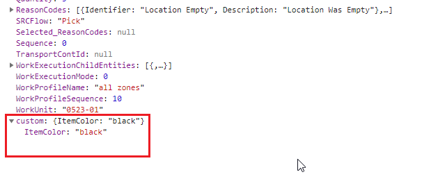

Manhattan Active SCALE Documentation
How to configure Web API Exit Point
Web API exit point can be configure as API, Web Service or Stored Procedure.
Here is an example to add Exit Point for http://ServerName/general/scaleapi/WorkInstructionsApi/workInstructions URI.
The POST-WorkInstructionsApi-workInstructions-After exit point added for the above URI and Stored Procedure configured as exit point program.
"@CUSTOM" argument contains the API parameters as serialized json which has the value for InternalInstructionNum.
In this example system is fetching the Item color based on the Item for the InternalInstructionNum.
JSON string created for the Item Color and assign to output parameter.
| Sample stored procedure exit point program for POST-WorkInstructionsApi-workInstructions-After exit point |
Copy Code
|
|---|---|
CREATE PROCEDURE [EXP_WarehouseMobileExample] ( @SESSIONVALUE xml, @URL nvarchar(max), @CUSTOM nvarchar(max), @RETURNVALUE nvarchar(max) output ) AS SET NOCOUNT ON; declare @customIndex numeric(9); declare @itemcolor nvarchar(25); Declare @id numeric(9) SELECT @id = insNum FROM OPENJSON(@CUSTOM) WITH ( insNum numeric(9) '$.WorkExecutionChildEntities[0].InternalInstructionNum' ) SELECT @itemcolor =item_COLOR from ITEM i Inner join work_instruction w on w.item = i.item and(( i.company = w.company) or i.company is null and w.company is null ) where w.internal_instruction_num =@id set @RETURNVALUE ='{"ItemColor":'''+@itemcolor+'''}'; |
|
API response contains the Exit point return value inside the "custom" attribute.

Support for Error Messages
The application supports displaying error messages from the exit point stored procedures. To display an error, add the below statement in Stored Procedure with a valid message.
EXEC ThrowError @MESSAGE
This error statement can be used while configuring store procedures for any exit points.
Note